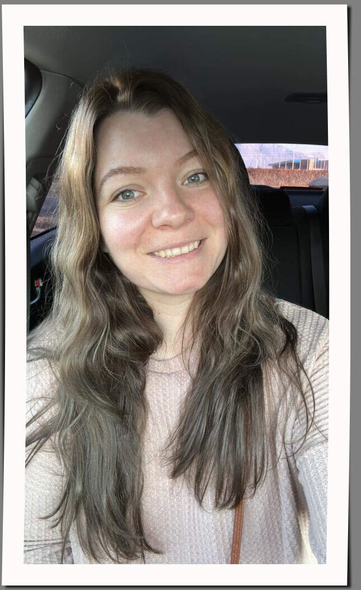
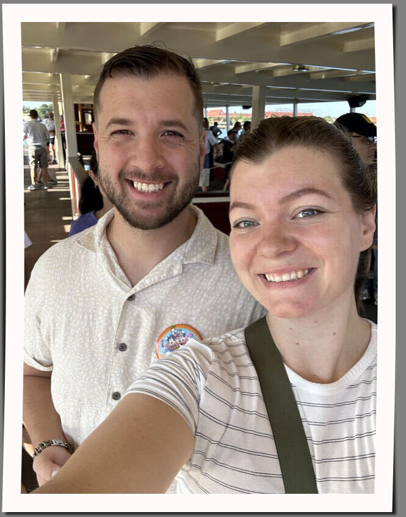

About Me
Hello! My name is Grace Purkiss. I am a mother to 4 beautiful chrildren and wife to my amazing husband, Joseph who is also taking classes with me in this field. We live in Ogden, Utah, UAS. I am so thrilled to be learning new skills and exploring the depths of programing and web development. I am having a wonderful time seeing my vision come to life with CSS as well as getting to practice patients as programming and web development can be challanging at times. I hope to inspire my daughters and to show them that we can do hard things! I can't wait to be proficiant and start working independently within this field.
Vacation
My family and I loved going to Disneyland. We got to meet all the Disney characters and expierence the "magic" around the theme park. Our favorite part was getting into the StarWars theme area. We also spent time at Universal theme park and went on rollercoasters and saw Harry Potter world. It was a wonderful time and we can't wait to go back again. This is a picture of my husband and I on the boat going to Disney on our first day of vacation.
